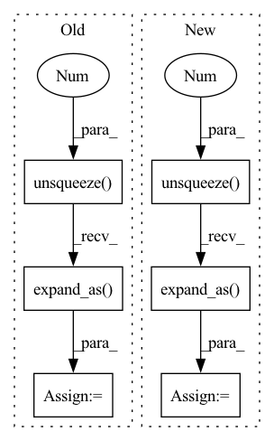

Pattern ID :25970

Before Change
batch["features"], batch["attention_mask"]
)
mask = batch["attention_mask"].unsqueeze(-1).expand_as(s_logits)
// (bs, seq_lenth, voc_size)
s_logits_slct = torch.masked_select(s_logits, mask)
// (bs * seq_length * voc_size) modulo the 1s in mask
s_logits_slct = s_logits_slct.view(-1, s_logits.size(-1))
After Change
batch["input_ids"], attention_mask
)
mask = attention_mask.unsqueeze(-1).expand_as(s_logits)
// (bs, seq_lenth, voc_size)
s_logits_slct = torch.masked_select(s_logits, mask)
// (bs * seq_length * voc_size) modulo the 1s in mask
s_logits_slct = s_logits_slct.view(-1, s_logits.size(-1))
In pattern: SUPERPATTERN
Frequency: 4
Non-data size: 6
Instances
Fragment ID: 78468220
Project Name: elephantmipt/bert-distillation
Commit Name: 55e7bb18de7b256d34592a6a31a82ec0d30975a5
Time: 2020-06-01
Author: Balaganskij.NN@phystech.edu
File Name: src/runners/runners.py
M Class Name: DistilMLMRunner
N Class Name: DistilMLMRunner
M Method Name: _handle_batch(2)
N Method Name: _handle_batch(2)
M Parent Class: dl.Runner
N Parent Class: dl.Runner
M File Name: src/runners/runners.py
N File Name: src/runners/runners.py
M Start Line: 54
M End Line: 61
N Start Line: 52
N End Line: 62
'>
Before Change
test_item_emb = self.item_embedding.weight // [item_num H]
test_item_emb = test_item_emb.repeat(output.size(0), 1, 1) // [user_num item_num H]
user_hidden = output.unsqueeze(1).expand_as(test_item_emb) // [user_num item_num H]
test_bias = self.bias.weight // [item_num 1]
test_bias = test_bias.repeat(user_hidden.size(0), 1, 1) // [user_num item_num 1]
After Change
test_item_emb = self.item_embedding.weight // [item_num H]
test_item_emb = test_item_emb.repeat(seq_output.size(0), 1, 1) // [user_num item_num H]
user_hidden = seq_output.unsqueeze(1).expand_as(test_item_emb) // [user_num item_num H]
test_bias = self.bias.weight // [item_num 1]
test_bias = test_bias.repeat(user_hidden.size(0), 1, 1) // [user_num item_num 1]
'>
Fragment ID: 78468223
Project Name: rucaibox/recbole
Commit Name: 1714ed39db89b102bc46fc23155f92de0d8996bd
Time: 2020-10-15
Author: hui.wang@ruc.edu.cn
File Name: recbox/model/sequential_recommender/transrec.py
M Class Name: TransRec
N Class Name: TransRec
M Method Name: full_sort_predict(2)
N Method Name: full_sort_predict(2)
M Parent Class: SequentialRecommender
N Parent Class: SequentialRecommender
M File Name: recbox/model/sequential_recommender/transrec.py
N File Name: recbox/model/sequential_recommender/transrec.py
M Start Line: 111
M End Line: 116
N Start Line: 106
N End Line: 115
'>
Before Change
// fetch the last hidden state of last timestamp
c_global = ht = self.gather_indexes(gru_out, interaction[self.ITEM_LIST_LEN] - 1)
// avoid the influence of padding
mask = item_id_list.gt(0).unsqueeze(2).expand_as(gru_out)
q1 = self.a_1(gru_out)
q2 = self.a_2(ht)
q2_expand = q2.unsqueeze(1).expand_as(q1)
// calculate weighted factors α
After Change
// fetch the last hidden state of last timestamp
c_global = ht = self.gather_indexes(gru_out, item_seq_len - 1)
// avoid the influence of padding
mask = item_seq.gt(0).unsqueeze(2).expand_as(gru_out)
q1 = self.a_1(gru_out)
q2 = self.a_2(ht)
q2_expand = q2.unsqueeze(1).expand_as(q1)
// calculate weighted factors α
'>
Fragment ID: 78468217
Project Name: rucaibox/recbole
Commit Name: 1714ed39db89b102bc46fc23155f92de0d8996bd
Time: 2020-10-15
Author: hui.wang@ruc.edu.cn
File Name: recbox/model/sequential_recommender/narm.py
M Class Name: NARM
N Class Name: NARM
M Method Name: forward(3)
N Method Name: forward(2)
M Parent Class: SequentialRecommender
N Parent Class: SequentialRecommender
M File Name: recbox/model/sequential_recommender/narm.py
N File Name: recbox/model/sequential_recommender/narm.py
M Start Line: 81
M End Line: 100
N Start Line: 76
N End Line: 95
'>
Before Change
student.train()
s_logits, s_hidden_states = student(tok_idxs, attention_mask)
mask = attention_mask.unsqueeze(-1).expand_as(s_logits)
// (bs, seq_lenth, voc_size)
s_logits_slct = torch.masked_select(s_logits, mask)
// (bs * seq_length * voc_size) modulo the 1s in mask
s_logits_slct = s_logits_slct.view(-1, s_logits.size(-1))
After Change
student.train()
s_logits, s_hidden_states = \
student(batch["features"], batch["attention_mask"])
mask = batch["attention_mask"].unsqueeze(-1).expand_as(s_logits)
// (bs, seq_lenth, voc_size)
s_logits_slct = torch.masked_select(s_logits, mask)
// (bs * seq_length * voc_size) modulo the 1s in mask
s_logits_slct = s_logits_slct.view(-1, s_logits.size(-1))
'>
Fragment ID: 78468219
Project Name: elephantmipt/bert-distillation
Commit Name: e720f24176ffd1f0ea5f300a8adb0e9b2ac8abdc
Time: 2020-04-30
Author: balaganskij.nn@phystech.edu
File Name: src/runners/runners.py
M Class Name: DistilMLMRunner
N Class Name: DistilMLMRunner
M Method Name: _handle_batch(2)
N Method Name: _handle_batch(2)
M Parent Class: dl.Runner
N Parent Class: dl.Runner
M File Name: src/runners/runners.py
N File Name: src/runners/runners.py
M Start Line: 41
M End Line: 69
N Start Line: 43
N End Line: 65